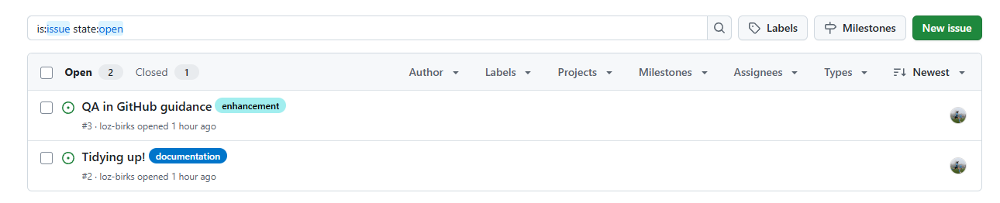

Branches and Issues for QA
This process can be managed in GitHub desktop, VS Code, or wherever you are most comfortable.
Remember the principles of branching
First let’s remind ourselves of the principles of branching (see here for an intro to branching):
All code in the main branch should be fully QA’d and functional - even if this means that the repo is almost empty initially.
New developments and changes should be coded in their own branch: one branch per ‘feature’. Give the branch a name that helps you identify what a change relates to.
If working on larger changes, it may be best to break it down into smaller steps and develop and QA iteratively - you can branch off your branch to help with this.
GitHub will provide an audit trail of changes made, when they were made, and who made them. This aligns nicely with the team’s QASAR process. It is also easy to roll back to an earlier version if needed.
Remember that we don’t have enterprise licences so we can’t protect our main branches. Changes can be merged without review so be careful.
1. Planned QA Process
Check
There are a couple of checks to do before QA kicks off properly.
If you are the author:
Check that your code is intentionally commented.
The changes you have made are complete, self-reviewed, and saved.
You may want to include the author and latest modification date at the top (although GitHub will help manage this for you).
Ensure that your repo is up to date on GitHub so that the person QA-ing has the most recent version.
Make sure that the reviewer is a collaborator in the repo settings.
If you are the QA’er:
- Make sure that you have the time and knowledge to do the review.
Complete QA - the reviewer
Once you’ve been added as a reviewer, you will receive an email with a link, and a GitHub notification where you can view changes.

Additions will be in green and removals in red. Review all changes and files, adding comments and requesting changes where necessary.

Comments can be added in-line with code

Once you are happy with the changes and all issues are resolved, you can approve the pull request.

2. What to do if you spot an issue or have an idea
If you are not within the designated QA process, it is still possible that, in using the code, you see a bug or you have a suggestion for a development. You can do that by creating issues. Any user with read access to a repo can create an issue (assuming that issues are enabled for the repo).

The process
[You, the idea-haver or bug-spotter] Create an issue detailing the problem or idea (help here: https://docs.github.com/en/issues/tracking-your-work-with-issues/using-issues/creating-an-issue).
[You] If the error or bug is solvable and you feel inclined, you have the option to create a branch that addresses the issue. You can link the pull request with the issue (https://docs.github.com/en/issues/tracking-your-work-with-issues/using-issues/linking-a-pull-request-to-an-issue#linking-a-pull-request-to-an-issue-using-a-keyword).
[The author] The person managing the code can add the issue number to any relevant ticket on the task board.
[The author] The error, bug, or development can be prioritised and actions. Their pull request can also be linked with the issue (https://docs.github.com/en/issues/tracking-your-work-with-issues/using-issues/linking-a-pull-request-to-an-issue#linking-a-pull-request-to-an-issue-using-a-keyword).
Issues linked with a pull request will close automatically when they are merged. If not, they can be closed by users with triage permission or greater (https://docs.github.com/en/issues/tracking-your-work-with-issues/administering-issues/closing-an-issue).
Summary of the process